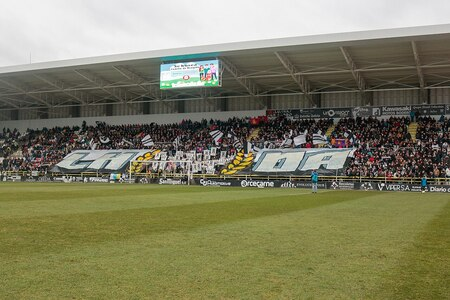
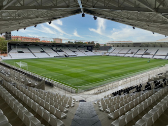

El Burgos CF es un club de fútbol español con una rica historia y una apasionada base de seguidores. Fundado en 1922, el club ha competido en varias divisiones del fútbol español y ha dejado una marca indeleble en la comunidad local. Nuestro objetivo es promover el deporte y los valores del fútbol, tanto dentro como fuera del campo.
Actualmente, el Burgos CF juega en la Segunda División de España, conocida como LaLiga SmartBank. El club sigue trabajando arduamente para ascender a la Primera División y competir con los mejores equipos del país.
Los orígenes del Burgos CF se remontan a principios del siglo XX, cuando un grupo de jóvenes entusiastas del fútbol decidió formar un equipo para competir en torneos locales. Con el tiempo, el club fue ganando popularidad y se estableció como una institución deportiva importante en la región de Castilla y León.
La afición del Burgos CF es conocida por su lealtad y pasión. Los abonados del club son una parte fundamental de su éxito, apoyando al equipo en cada partido, ya sea en casa o fuera. La comunidad de seguidores del Burgos CF crea una atmósfera única en El Plantío, haciendo del estadio un verdadero fortín para el equipo. En la Campaña de Abonados 2019-2020, en 2.ª División B, el club superó por primera vez los 5000 abonados. Cuenta con 16 peñas de aficionados, una Grada de Animación (La Hinchada del Arlanzón) en la grada baja del Fondo Sur y una asociación de pequeños accionistas (APABCF).
El estadio del Burgos CF es El Plantío, un recinto con capacidad para más de 12,000 espectadores. Inaugurado en 1964, El Plantío ha sido testigo de innumerables partidos emocionantes y es conocido por su atmósfera vibrante y apasionada. Es el hogar de los seguidores del Burgos CF y un símbolo de la historia y tradición del club.
